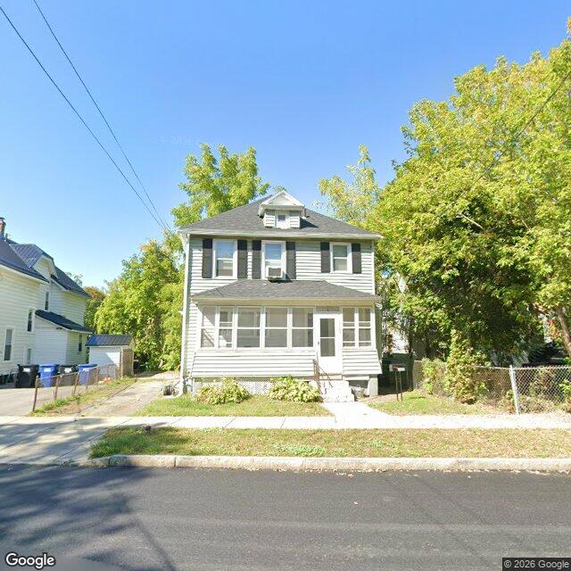

Property entry
1123 Lemoyne Ave
Published 2026-11-04T05:04:32+00:00
Parcel key: 003-19-270

City records
Matches use parcel IDs or normalized property addresses. Nearby properties are not treated as matches. Records may include historical or closed cases; check each record's status and dates. Publication dates are not source-data dates.
Vacant properties 0
No matches stored for this feed. The feed or address matching may be incomplete; this is not confirmation that no records exist.
Records refreshed 2026-11-04.
Rental registry 1
- Latitude
- 43.07940421
- Longitude
- -76.15551211
- NeedsRR
- Yes
- ObjectId
- 261
- PropertyAddress
- 1123 Lemoyne Ave
- RR_contact_name
- SFR3-030 LLC
Records refreshed 2026-11-04.
Code violations 7
- Latitude
- 43.07940421
- Longitude
- -76.15551211
- Neighborhood
- Court-Woodlawn
- ObjectId
- 13523
- SBL
- 003.-19-27.0
- complaint_address
- 1123 Lemoyne Ave
- Latitude
- 43.07940421
- Longitude
- -76.15551211
- Neighborhood
- Court-Woodlawn
- ObjectId
- 13524
- SBL
- 003.-19-27.0
- complaint_address
- 1123 Lemoyne Ave
- Latitude
- 43.07940421
- Longitude
- -76.15551211
- Neighborhood
- Court-Woodlawn
- ObjectId
- 13525
- SBL
- 003.-19-27.0
- complaint_address
- 1123 Lemoyne Ave
- Latitude
- 43.07940421
- Longitude
- -76.15551211
- Neighborhood
- Court-Woodlawn
- ObjectId
- 13526
- SBL
- 003.-19-27.0
- complaint_address
- 1123 Lemoyne Ave
Records refreshed 2026-11-04.
Unfit properties 0
No matches stored for this feed. The feed or address matching may be incomplete; this is not confirmation that no records exist.
Records refreshed 2026-11-04.
AI image observations (unverified)
These observations are generated from an image, not an inspection or an official code finding. No human verification is recorded here.
Image capture date: Not recorded. The entry publication date does not establish the age of the image.
Automated image description
{ "summary": "The visible exterior of the property appears to be a two-story residential structure with an enclosed front porch, generally exhibiting maintained conditions.", "property_type_guess": "two_family", "visible_conditions": [ "Two-story structure with a dormer on the roof", "Light-colored horizontal siding on the main structure and enclosed porch", "Dark-colored roof shingles appear intact", "Multiple windows, some with dark shutters, and one window air conditioning unit visible", "Enclosed front porch with a single entry door", "Small front yard with grass and foundation plantings", "Concrete sidewalk leading to the front steps", "Chain-link fence visible on the right side of the property", "Driveway visible on the left side leading to the rear of the property", "Several residential trash/recycling bins are visible on the left side of the property, near a small shed in the rear" furlough", "condition_scores": { "roof": "good", "siding_or_facade": "good", "windows_doors": "good", "porch_or_entry": "good", "yard_or_lot": "good", "trash_debris": "none_visible", "vegetation_overgrowth": "none_visible" }, "visible_flags": { "boarded_windows_or_doors": "no", "fire_damage_visible": "no", "structural_damage_visible": "no", "vacancy_signs_visible": "no", "active_construction_visible": "no" }, "possible_unrecorded_issues": [], "image_annotations": [], "needs_human_review": "false", "confidence": "high", "caveats": [] }
Property type guess: unclear
Visible conditions
- No items reported.
Condition scores
No structured condition scores available.
Visible flags
No structured visible flags available.
Possible image-only flags
- No items reported.
AI review boxes
- No items reported.
Review reasons
- No items reported.
Image quality
- Available
- True
- Bytes
- 93780
- Needs Rerun
- False
ACS tract context
Census Tract 2; Onondaga County; New York
- Total population
- 3511
- Median household income
- 51848
- Poverty rate
- 28.1
- Housing units
- 1686
- Vacancy rate
- 14.7
- Renter-occupied share
- 50.1
- Median gross rent
- 146700
OpenStreetMap nearby
60 meter search radius
Nearby map data is temporarily unavailable. This does not mean there are no mapped features.